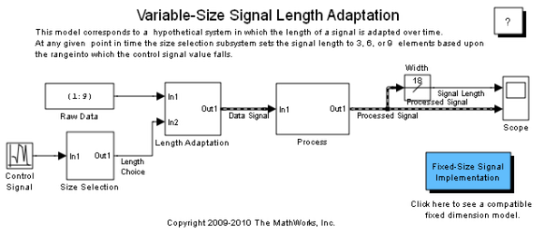

Variable-Size Signal Length Adaptation
This model corresponds to a hypothetical system where the length of a signal changes over time by adapting to the changes of a control signal.
Contents
About This Demo
Open the demo model sldemo_varsize_dataLengthAdapt.
This model consists of two sections: the left section generates a signal and converts the signal to variable size; the right section processes the variable-size signal and outputs it to a scope. Length adaptation is based on the value of the control signal. When the control signal falls within one of the three predefined ranges, the size of the data signal changes accordingly.
This variable-size signal is then fed into a processing block, where blocks supportive of variable-size signals, operate on it. Note the application of an Embedded MATLAB® block with both the input and the output signals of variable-size. The resulting signal, as well as the signal width, are fed to a scope for visualization.
